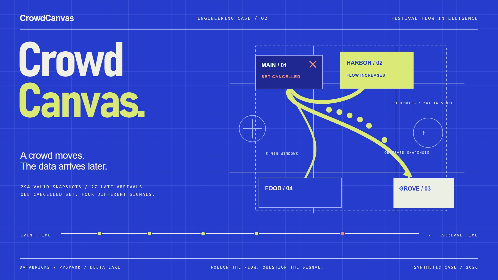
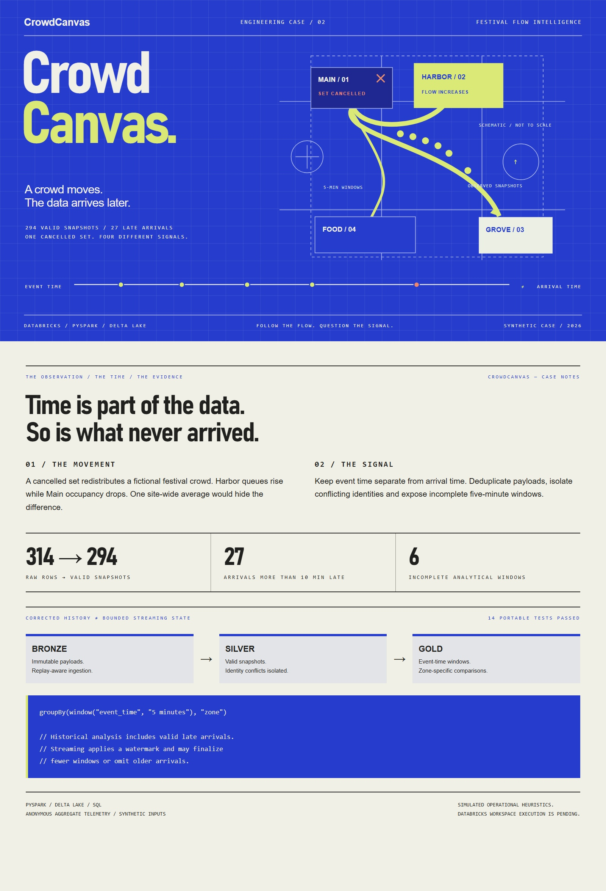

Mean queue wait
18:00 UTCCancellation at 18:3019:15 UTC
Pressure is a synthetic operational heuristic: peak occupancy ≥85% or mean queue wait ≥12 minutes. It is not a crowd-safety determination.

Inspect corrected historical five-minute windows. Compare all valid snapshots with the subset arriving within ten minutes.
Pressure is a synthetic operational heuristic: peak occupancy ≥85% or mean queue wait ≥12 minutes. It is not a crowd-safety determination.
The on-time subset is a comparison filter, not a Spark watermark simulator. The streaming notebook has separate lateness and finalization semantics.
| Zone | Before cancellation wait | After cancellation wait | Peak occupancy |
|---|
Event-time windows describe when a snapshot was observed. Delay is diagnosed from the separate arrival timestamp.
Incomplete windows show reduced sample count. Conflicting event identities are quarantined rather than silently selected.
The corrected batch keeps valid late history. The separate watermarked stream bounds state and can emit fewer finalized windows.
Full case JPG ↗ Written case study ↗
Artwork and text are editable in docs/design.
